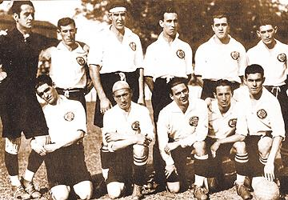
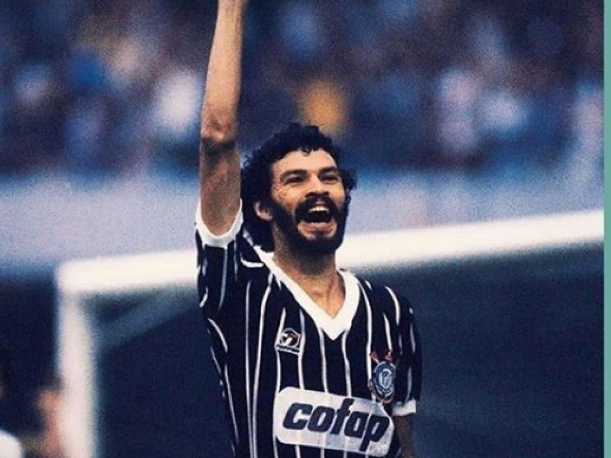
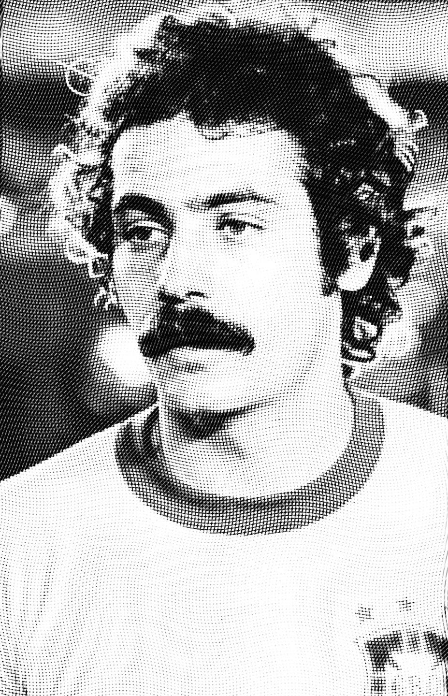
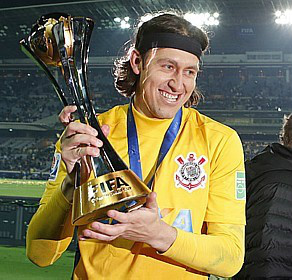
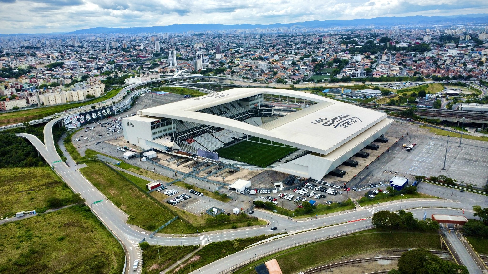

Nossa História

O Sport Club Corinthians Paulista foi fundado em 1º de setembro de 1910 por um grupo de operários do bairro do Bom Retiro, em São Paulo. O nome foi inspirado no Corinthian FC da Inglaterra, que estava em turnê pelo Brasil na época.
Conhecido como "Time do Povo", o Corinthians se tornou um dos clubes mais amados do Brasil, com uma torcida que ultrapassa os 30 milhões de fãs em todo o país.
Marcos Históricos
- 1914: Primeiro título paulista
- 1982: Democracia Corinthiana
- 1990: Primeiro título brasileiro
- 2000: Primeiro título mundial
- 2012: Conquista da Libertadores e bicampeonato mundial
Títulos Principais
- Mundiais: 2 (2000 e 2012)
- Libertadores: 1 (2012)
- Brasileirão: 7 (1990, 1998, 1999, 2005, 2011, 2015, 2017)
- Copa do Brasil: 3 (1995, 2002, 2009)
- Paulistão: 30 títulos
Lendas do Timão

Sócrates
Médico, capitão e líder da Democracia Corinthiana (1982-1984)

Rivelino
O "Rei da Pedalada", jogou entre 1974-1978

Marcelinho Carioca
"Pé de Anjo", ídolo dos anos 90 e maior artilheiro do século XX

Cássio
Herói do título da Libertadores 2012
Nossa Casa

Conhecida como "Itaquerão", a Arena Corinthians foi construída para a Copa do Mundo de 2014 e é considerada um dos melhores estádios do mundo.
Características
- Capacidade: 49.205 torcedores
- Área total: 204 mil m²
- Inauguração: 10 de maio de 2014
- Primeiro jogo: Corinthians 1 x 0 Figueirense
- Recorde de público: 48.196 pagantes (Corinthians x Palmeiras, 2025)
Fiel Torcida
A torcida corinthiana é conhecida por sua paixão e fidelidade, em qualquer situação. Alguns fatos sobre a maior torcida do Brasil:
Números Impressionantes
Mais de 30 milhões de torcedores em todo o Brasil
Gaviões da Fiel
Fundada em 1969, é a maior torcida organizada do país